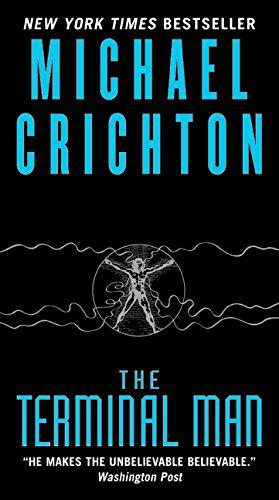

An astonishing technique for recovering and cloning dinosaur DNA has been discovered. Now humankind’s most thrilling fantasies have come true. Creatures extinct for eons roam Jurassic Park with
their awesome presence and profound mystery, and all the world can visit them—for a price. Until something goes wrong. . . . In Jurassic Park, Michael Crichton taps all his mesmerizing talent and
scientific brilliance to create his most electrifying technothriller.
In the Nevada desert, an experiment has gone horribly wrong. A cloud of nanoparticles -- micro-robots -- has escaped from the laboratory. This cloud is self-sustaining and self-reproducing.
It is intelligent and learns from experience. For all practical purposes, it is alive. It has been programmed as a predator. It is evolving swiftly, becoming more deadly with each passing hour.
Every attempt to destroy it has failed. And we are the prey.
The United States government is given a warning by the pre-eminent biophysicists in the country: current sterilization procedures applied to returning space probes may be inadequate to guarantee
uncontaminated re-entry to the atmosphere. Two years later, seventeen satellites are sent into the outer fringes of space to collect organisms and dust for study.
One of them falls to earth, landing in a desolate area of Arizona. Twelve miles from the landing site, in the town of Piedmont, a shocking discovery is made: the streets are littered with the dead
bodies of the town's inhabitants, as if they dropped dead in their tracks.
In Paris, a physicist dies after performing a laboratory experiment for a beautiful visitor. In the jungles of Malaysia, a mysterious buyer purchases deadly cavitation technology, built to his specifications.
In Vancouver, a small research submarine is leased for use in the waters off New Guinea. And in Tokyo, an intelligence agent tries to understand what it all means.
Thus begins Michael Crichton's exciting and provocative technothriller, State of Fear. Only Michael Crichton's unique ability to blend science fact and pulse-pounding fiction could bring such disparate
elements to a heart-stopping conclusion. This is Michael Crichton's most wide-ranging thriller. State of Fear takes the reader from the glaciers of Iceland to the volcanoes of Antarctica, from the Arizona
desert to the deadly jungles of the Solomon Islands, from the streets of Paris to the beaches of Los Angeles. The novel races forward, taking the reader on a rollercoaster thrill ride, all the while keeping the
brain in high gear. Gripping and thought-provoking, State of Fear is Michael Crichton at his very best
A group of American scientists are rushed to a huge vessel that has been discovered resting on the ocean floor in the middle of the South Pacific. What they find defies their imaginations and mocks their
attempts at logical explanation. It is a spaceship of phenomenal dimensions, apparently, undamaged by its fall from the sky. And, most startling, it appears to be at least three hundred years old....
In an Arizona desert, a man wanders in a daze, speaking words that make no sense. Within twenty-four hours he is dead, his body swiftly cremated by his only known associates.
Halfway around the world, archaeologists make a shocking discovery at a medieval site. Suddenly they are swept off to the headquarters of a secretive multinational corporation that has developed an
astounding technology. Now this group is about to get a chance not to study the past but to enter it. And with history opened up to the present, the dead awakened to the living,
these men and women will soon find themselves fighting for their very survival -- six hundred years ago.
Jamaica in 1665 is a rough outpost of the English crown, a minor colony holding out against the vast supremacy of the Spanish empire. Port Royal, Jamaica′s capital, a cut-throat town of taverns, grog shops, and
bawdy houses, is devoid of London′s luxuries; life here can end swiftly with dysentery or a dagger in your back. But for Captain Charles Hunter it is a life that can also lead to riches, if he abides by the island′s
code. In the name of His Majesty King Charles II of England, gold in Spanish hands is gold for the taking. And law in the New World is made by those who take it into their hands. Word in port is that the Spanish
treasure galleon El Trinidad, fresh from New Spain, is stalled in nearby Matanceros harbor awaiting repairs. Heavily fortified, the impregnable Spanish outpost is guarded by the blood-swiller Cazalla, a favorite
commander of King Philip IV himself. With the governor′s backing, Hunter assembles a roughneck crew to infiltrate the enemy island and commandeer the galleon, along with its fortune in Spanish gold. The raid is as
perilous as the bloody legends of Matanceros suggest, and Hunter will lose more than one man before he finds himself on the island′s shores, where dense jungle and the firepower of Spanish infantry are all that
stand between him and the treasure. With the help of his cunning crew, Hunter hijacks El Trinidad and escapes the deadly clutches of Cazalla, leaving plenty of carnage in his wake. But his troubles have just begun. . . .

Harry Benson is prone to violent, uncontrollable seizures and is under police guard after attacking two people. Dr. Roger McPherson, head of the prestigious Neuropsychiatric Research Unit at University Hospital
in Los Angeles, is convinced he can cure Benson through a procedure called Stage Three. During this highly specialized experimental surgery, electrodes will be place in the patient's brain, sending monitored,
soothing pulses to its pleasure canyons. Though the operation is a success, there is an unforseen development. Benson learns how to control the pulses and is increasing their frequency. He escapes -- a
homicidal maniac loose in the city -- and nothing will stop his murderous rampages or impede his deadly agenda. . .
John Michael Crichton (October 23, 1942 – November 4, 2008) was an American author and filmmaker. His books have sold over 200 million copies worldwide, and over a dozen have been adapted into films.
His literary works are usually within the science fiction, techno-thriller, and medical fiction genres, and heavily feature technology. His novels often explore technology and failures of human interaction
with it, especially resulting in catastrophes with biotechnology. Many of his novels have medical or scientific underpinnings, reflecting his medical training and scientific background. Crichton received an
M.D. from Harvard Medical School in 1969 but did not practice medicine, choosing to focus on his writing instead. Initially writing under a pseudonym, he eventually wrote 26 novels, including
The Andromeda Strain (1969),
The Terminal Man (1972),
The Great Train Robbery (1975),
Congo (1980),
Sphere (1987),
Jurassic Park (1990),
Rising Sun (1992),
Disclosure (1994),
The Lost World (1995),
Airframe (1996),
Timeline (1999),
Prey (2002),
State of Fear (2004), and
Next (2006). Several novels, in various states of completion, were published after his death in 2008. Crichton was also involved in the film and
television industry. In 1973, he wrote and directed
Westworld, the first film to utilize 2D computer-generated imagery. He also directed
Coma (1978),
The First Great Train Robbery (1979),
Looker (1981), and
Runaway (1984). He was the creator of the television series
ER (1994–2009) and several of his novels were adapted into films, most notably the Jurassic Park franchise.